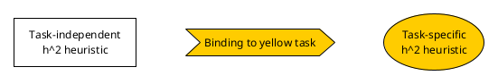
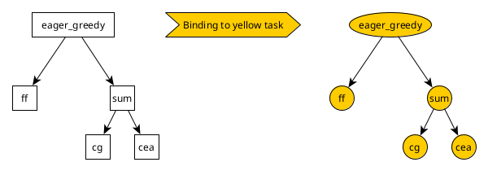
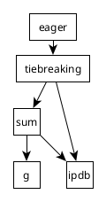
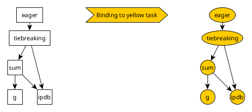
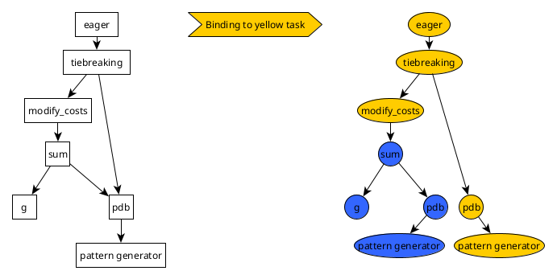
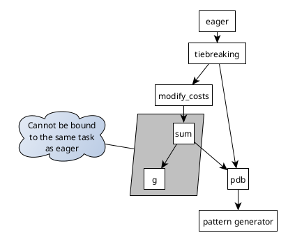
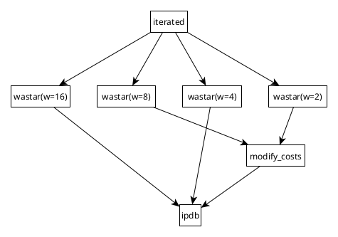
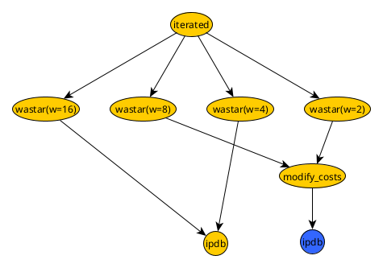
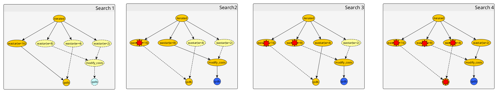
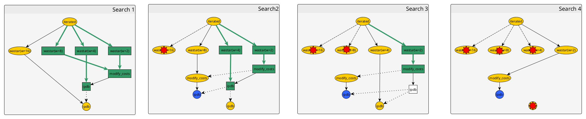

Component Interaction#
As part of a long-standing issue, we recently re-worked the way components (heuristics, search algorithms, pattern generators, ...) are instantiated. The main problem with the previous way was that the task had to be passed to some components in the constructor, which introduced complex dependencies on the construction order. This was incompatible with our long-term plans, pre-definitions of objects, and the planned Python interface. Here we describe the solution we landed on and some technical details.
Split into Task-Independent and Task-Specific Classes#
As a first step, we split each component into a task-independent and a task-specific component. For example, the component for the h^m heuristic now consists of a task-independent version (representing the concept of an h^m heuristic for a specific value of m but not for a specific task), and a task-specific version (representing the concept of a h^m heuristic for a specific m and a specific task). Thinking of the h^2 heuristic as a mathematical function mapping a task Pi and a state s to a value h^2(Pi, s), the task-independent component would be this function h^2, while the task-specific component would be the function h^2(s) = h^2(Pi, s) for a specific task Pi. We call the process of creating a task-specific component from a task-independent component "binding", similar to binding function arguments to specific constants. So the parser now creates task-independent components which are bound to a task after their construction.

Binding Task-Independent Components to Tasks#
Components can have subcomponents (a search algorithm uses a heuristic, a PDB heuristic uses a pattern generator, etc.), which - somewhat simplified - leads to an implicit tree of subcomponents rooted in every component. When binding a task-independent component to a task, this recursively binds the task to each component in this tree and creates an equivalent tree of task-specific components.

There are two additional complications: first, we allow let expressions to create variables that can be used in expressions. When the expression is parsed, these variables are resolved and mean that the same task-independent component is used in multiple places. The implicit tree of subcomponents then becomes a DAG instead. Here is an example of a commandline expression, equivalent python code, and the resulting DAG:

We want ipdb to be only bound to the task once in this case, as this step potentially requires a lot of time and the resulting objects blocks a lot of memory. Binding still works the same way: we recursively bind the task to components in the DAG however, in case the node was bound to the task before, we re-use the task-specific component already present. This creates a DAG of task-specific components parallel to the DAG of task-independent components.

The second complication comes from the fact that some nodes might bind subcomponents to a different task. The only example we have in the code so far is an evaluator that evaluates nested evaluators under a different cost function but other components like that are possible in the future. When binding a task t to such a node, the subgraphs rooted in its subcomponents will be bound to a task f(t). This task could potentially be transformed again, further down the DAG. In that sense, every path to a node in the overall DAG is associated with a task f1(f2(...fn(t)) where f1 to fn are the transformations done by task-transforming nodes on the path. When binding a task to a DAG with task transforming nodes, every task-independent component has to be bound to the set of tasks corresponding to all paths to that node. The resulting DAG is no longer isomorphic to the input, but instead, task-transforming nodes create "copies" of the subgraph reachable from them.

Importantly, when binding a task-transforming component, all its descendants in the graph will be bound to a transformed task. In particular all task-independent components that are only reachable through task-transforming nodes, can never be bound to the untransformed task.

The Complication with IteratedSearch#
Our iterated search class runs multiple search algorithms one after the other. Say this involves four search algorithms with a common PDB heuristics, where the second and fourth search us a cost transformation on the heuristic.
--search "let(h, ipdb(),
let(h_mod, eval_modify_costs(h),
iterated([
wastar(h, w=16),
wastar(h_mod, w=8),
wastar(h, w=4),
wastar(h_mod, w=2)
])))"
This corresponds to the following DAG of task-independent components

If we bind a task to this DAG, we would get the following result.

However, with an iterated search, we do not want to spend time on the preprocessing for the second search algorithm, or unnecessarily reserve memory for its pattern database, while the first search is running. We also would like to reuse created objects as much as possible and only destroy objects once they are no longer used. In the example above bound to a task t, we would like to
- Bind
h = ipdb()totand run a weighted A* search with weight 16 using it. - Bind
h_mod = eval_modify_costs(h)tot, which bindsh = ipdb()tof(t), then run a weighted A* search with weight 8 using it. - Run a weighted A* search with weight 4 using the heuristic created in step 1. Afterwards, drop the heuristic from memory as it is no longer used.
- Run a weighted A* search with weight 2 using the heuristic created in step 2. Afterwards, drop the heuristic from memory as it is no longer used.
The following graphic shows what this looks like during the different stages of the search.
Nodes that are bound to a task are drawn with solid lines, while nodes that will be bound in the future but should not be in memory at that time are dashed. Components that are destroyed and removed from memory are shown with a red star.
Note that in stage 2, the yellow node for ipdb is kept alive, even though it is not used because it is used again in the stage 3 (and similarly, the node modify_costs is alive in stage 3).

To know which components to keep alive for how long, have to know what components will be used in the future. Viewing this from the perspective of an iterated search node that is bound to a task t, we know that all components that will be created in the future in subgraphs below a task-transforming node with transformation f, can only be bound to f(t) (or perhaps further transformations of f(t)). If the task-transforming node itself does not exist yet, all nodes reachble through binding it to t cannot exist yet either because nothing created f(t) yet. Only nodes that are reachable along edges that do not transform the task in the task-independent graph can have bound components worth preserving. Those nodes all use task t, so we can collect all task-independent components reachable in future phases of the iterated search (without binding them to a task), and then check for each one if we already bound it to t. If so, we should keep this task-specific component alive as it will be used in a later stage of the search.
The following image shows this using green edges and nodes for the part of the
graph that is reachable through non-transforming edges. We also show dotted
edges from a task-independent component to a task-specific one created by
binding it. Note that everything we have to keep alive is either directly owned
by a component currently in use (like the search algorithm of the current
phase, or the blue ipdb node owned by the modify_costs node) or is
reachable by a dotted line connecting a green component (task-independent
component from a future phase reachable through non-transforming edges) to a
yellow component (task-specific component bound to the task of iterated
search). Note also that in phase 3, the untransformed ipdb node is no longer
reacheable through green edges, so it gets destroyed at the end of phase 3.

In summary, to decide which already bound components to keep alive, iterated search: * loops through all future phases * recurses into task-independent components, following only non-transforming edges and collecting all reached subcomponents * checks for each reachable subcomponent if it was already bound to the same task that the iterated search is bound to * stores shared pointers to all task-specific components found this way to keep them alive
The list of shared pointers is updated in each iteration to only keep components used in future phases alive. Components not in use anymore are deleted automatically once their last shared pointer goes out of scope.